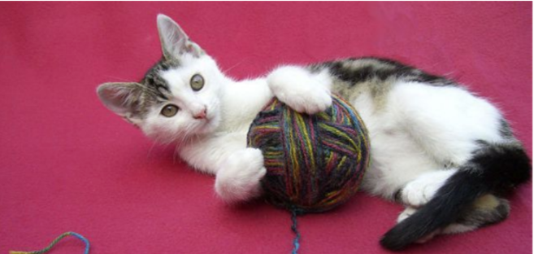

Click here for more information about the lions
They are often called house cats when kepts as indoor pets or simply cats when there is no need to distinguish
them from other felids and felines. They are often valued by humans for companionship.
There are more than seventy cat breeds recognized by various cat registries.
Cats were venerated in ancient Egypt, but there may have been instances of domestication as early as the
Neolithic from around 9,500 years ago (7500 BC).
Did you know that, the Felids are a rapidly evolving family of mammals that includes:

The difference between Characteristics and Behavior
| Characteristics | Behavior |
|---|---|
| The lion is a muscular, deep-chested cat with a short, | Lions spend much of their time resting, and are |
| rounded head, a reduced neck and round ears | inactive for about 20 hours per day. |